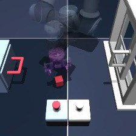
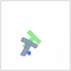
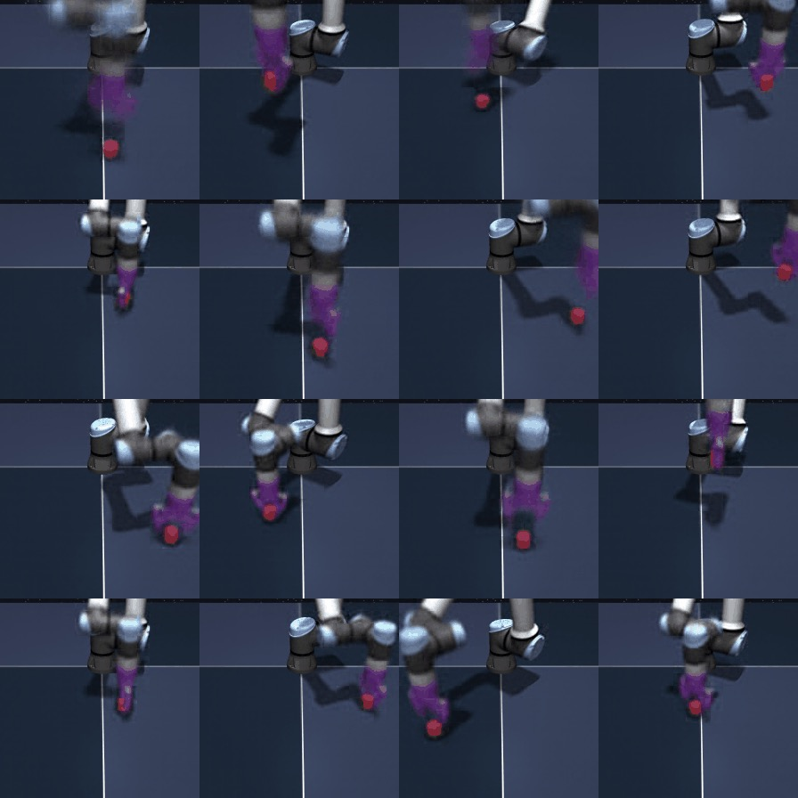
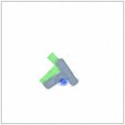
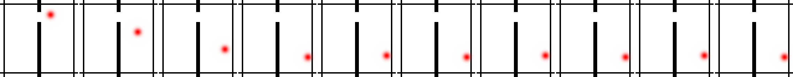
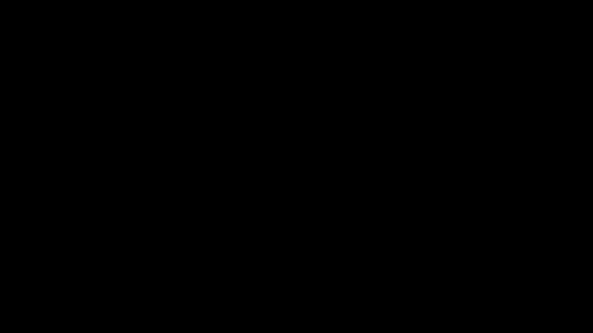

LeWorldModel: Stable End-to-End Joint-Embedding Predictive Architecture from Pixels
| Authors | Lucas Maes, Quentin Le Lidec, Damien Scieur, Yann LeCun, Randall Balestriero |
|---|---|
| Year | 2026 |
| Venue | N/A |
| Citations | 1 (0 influential) |
| DOI |
Overview
N/A
Abstract
Joint embedding Predictive Architectures (jepas) offer a compelling framework for learning world models in compact latent spaces, yet existing methods remain fragile, relying on complex multi-term losses, exponential moving averages, pre-trained encoders, or auxiliary supervision to avoid representation collapse. In this work, we introduce LeWorldModel (LeWM), the first jepa that trains stably end-to-end from raw pixels using only two loss terms: a next-embedding prediction loss and a regularizer enforcing Gaussian-distributed latent embeddings. This reduces tunable loss hyperparameters from six to one compared to the only existing end-to-end alternative. With ~15M parameters trainable on a single GPU in a few hours, LeWM plans up to 48x faster than foundation-model-based world models while remaining competitive across diverse 2D and 3D control tasks. Beyond control, we show that LeWM's latent space encodes meaningful physical structure through probing of physical quantities. Surprise evaluation confirms that the model reliably detects physically implausible events.
Figures and Diagrams





Summary
Key Points
- Predicts in latent space, not pixel space
- No contrastive learning or negative pairs needed
- VICReg prevents representation collapse
- Strong vision transfer learning performance
Detailed Summary
I-JEPA predicts target representations in latent space rather than reconstructing pixels.
This avoids learning low-level pixel statistics and focuses on semantic content.
Variance-invariance-covariance regularization prevents representation collapse without negative pairs.
Achieves strong transfer learning performance on vision benchmarks.
Key Equations
Prediction Loss
Minimizes distance between predicted and target representations in latent space.
Variance Regularization
Ensures representations maintain sufficient variance to prevent collapse.
Visual Explanation
